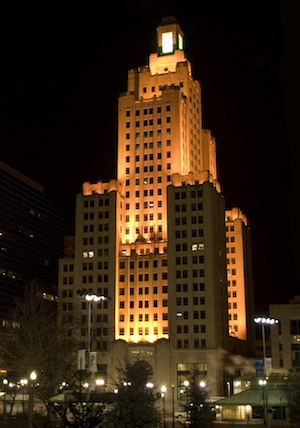
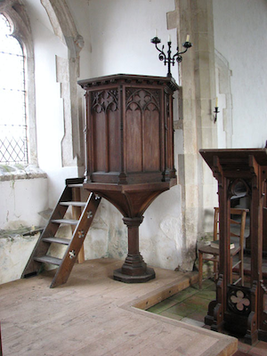
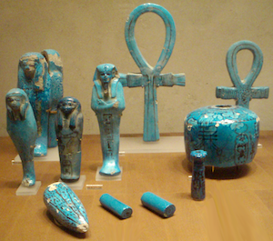

［＃ページの左右中央］
ロバート・ブロックに捧ぐ
［＃改ページ］
我暗き宇宙の大口を開けるを見たり
そこは暗き惑星のあてどなく廻り
恐怖より目をそらす術も無く廻り
知も光輝も名も無くして廻る場なり
そこは暗き惑星のあてどなく廻り
恐怖より目をそらす術も無く廻り
知も光輝も名も無くして廻る場なり
――ネメシス。
慎重肌の調査者なら、ロバート・ブレイク(*1)の死因は落雷ないしは放電が齎した広範な神経ショックであるという世間一般の信条に異を唱えるのを躊躇うだろう。確かに彼の面前の窓は割れていなかったが、自然というものはこれまでにも多くの奇怪な芸当をやってみせたではないか。彼の顔に浮かんだ表情にしても、何かよく判らない筋肉の収縮によって簡単に起きる種類のもので、彼が見たものとは無関係でありうるのだ。日記の記載の方は、明らかに、地域の迷信と彼が暴いた何らかの古物によって齎された突飛な想像の産物である。フェデラル・ヒルの廃教会(*2)における変則的な状況についていうと――それを見せられた精神分析医たちは、何かのでっち上げであり、意識していたか否かは措くとして、少なくともその一部にはブレイクがこっそり絡んでいたのだとさっさと結論づけた。
というのも、結局、犠牲者は、神話、夢、恐怖、邪教といった分野にのめり込んだ作家兼画家で、怪奇で亡霊じみた風景と効果をひたすら追求していたからだ。彼が以前行ったこの市における宿泊は――それは彼同様に神秘的な禁断の知識に深く没頭した奇妙な老人を訪ねるためだったが――死と炎の中で終わったのであり、ミルウォーキーの自宅から彼をここに連れ戻したのは、何か病的な本能だったに違いない。日記の中の陳述とは逆に、彼は昔話を知っていたのかも知れず、文学上の誹りを受けるはずだった大法螺が彼の死によって蕾のうちに摘み取られたということなのかも知れない。
しかしながら、証拠全部を吟味し関連づけた者の中には、より合理性を欠く常識はずれの説にしがみつく者がないではない。彼らはブレイクの日記を額面通りに受け止める傾向があり、疑いなく真正な教会の古い埋葬記録や、非正統的で反感を買っていた星の智慧教派が一八七七年まで確実に存在したこと、エドウィン・Ｍ・リリブリッジ(*3)という名の詮索好きな記者が一八九三年に失踪した記録といった幾つかの事実に重きを置きたがっている。何よりも彼らが重視するのは、若い作家の死に顔に浮かんだ醜怪で歪んだ恐怖の表情だった。廃教会から持ち出してきた奇妙な具合に
これら二派のいずれを採るかは読者自身に委ねられている。新聞各紙は手で触れるようなものについては懐疑的な論調で細かく触れたが、ロバート・ブレイクが見た――あるいは見たと思った――あるいは見たと偽った――ものの描画は相手にしなかった。さて、ここでは仔細に、冷静に、時間をかけて日記を検討し、主人公の側からの表現に基づいて出来事の暗黒の連鎖を纏めることにしよう。
ブレイク青年がプロヴィデンスに舞い戻ったのは一九三四年から一九三五年にかけての冬で、カレッジ街外れの緑濃い宅地にある古ぼけた住宅の上の階を住まいとした――東側の大きな丘の稜線の上で、ブラウン大学のキャンパス近く、大理石造りのジョン・ヘイ図書館の裏手にあたった。そこは快適かつ魅力的な場所だった。どこか村のように古趣のあるこぢんまりとしたオアシスで、手頃な納屋の屋根には人懐っこい猫たちが思い思いにひなたぼっこしていた。角張ったジョージ王朝風の家には越屋根があり、扇状の彫刻のある古典的な戸口、小さなガラスをはめた窓といったあらゆる十九世紀初期の造りをしていた。屋内には六枚板の扉や、幅広い床板や、コロニアル様式の湾曲する階段や、アダム期の白い炉額があり、裏側の部屋は三段下がった所に作ってあった。
ブレイクの書斎は南西の大きな角部屋で、南の窓から前庭を見下ろせた。西の窓は――その一つの前に彼は机を置いたのだが――丘の頂上から突き出す形になっていて、下町の屋根の広がりやその背後に燃える神秘的な夕焼けの華麗な眺望が見渡せた。遠い地平線の上には開けた郊外の坂が紫に染まっていた。その手前、ここから三キロ(*5)位の所に、幽霊のようなフェデラル・ヒルが盛り上がり、ぎっしりと林立する屋根や尖塔が謎めいた遠いアウトラインを描いていた。街に煙たなびくとき、それらは幻想の姿へと巻き込まれていくのだ。ブレイクはなにか未知のエーテル界を見ているような奇妙な感覚を受けた。ひとたび彼自ら探し出し足を踏み入れてしまえば夢と消えるとも消えぬとも知れない世界を。
蔵書の多くを送るよう実家に手紙を出すと、ブレイクは著述と画業のため居住区に似合いの古い家具を買い入れた――一人で暮らし、簡単な家事は自分でするようにした。アトリエは越屋根のガラスから良い光線が入る北側の屋根裏に構えた。最初の冬の間に、彼は最も良く知られた五本の短編をものし――『地に潜むもの』、『洞窟の階段』、『シャガイ』、『ナスの谷』、『星より来たりて食らうもの』(*6)――および七枚のカンバスを描いた。名状し難い人ならぬ怪物や、地球のものではない全く異質な風景の習作だった。
日が沈む頃彼はしばしば机に座り、西に広がる景色をうっとりと見つめたものだった――すぐ眼下のメモリアル・ホールの暗い塔、ジョージ王朝風の裁判所の鐘楼、下町地区に建つ優雅な小尖塔、そして、遠くにゆらめく尖塔に飾られた丘の、見も知らぬ街路と入り組んだ破風の群れが彼の夢想を大いにかきたてた。わずかな地元の知り合いが彼に教えてくれたのだが、遠くの坂になっている所は大きなイタリア系住民の居住区で、しかし家の大部分はヤンキーやアイルランド人時代の遺物だという。彼は時折、手の届かぬ彼方にある煙渦巻く幻の国に双眼鏡を向け、屋根や煙突や尖塔を一つ一つ見ては、それらが宿す奇怪な謎について思いに耽ったものだった。光学的な助けがあっても、フェデラル・ヒルはどこかしら異質で半ば伝説のような感じがし、ブレイク自身の小説や絵画に出てくる、非現実の、手に触れることのできない不思議に結びついているかのようだったのだ。この感じは、丘が紫に暮れ、ランプの灯がともる黄昏となり、裁判所の投光照明とインダストリアル・トラスト社(*7)の赤く燃える航空標識が夜をグロテスクに染めた後まで長く残った。
遠いフェデラル・ヒルにあるものの中でブレイクを何より魅了したのは、とある黒く大きな教会だった。それは日の高いうちから際立って見え、夕暮れともなれば燃え上がる空を背景に巨大な塔と尖塔とを黒々と屹立させていたのだ。小高い土地に建っているようで、煤けたファサード、斜めから見える北側の傾斜屋根、大きな尖り窓の先端部が、周囲に縺れ合う棟木と煙突陶冠を圧していた。常ならぬ程厳粛かつ簡素な、石造と思われるその建物には、一世紀ないしそれ以上の風雨と煤煙が痕を記していた。双眼鏡で見る限り、壮麗なアプジョン期に先行するゴチック復興期の実験的な様式で、ジョージ王朝時代の外観と比率からある程度の影響を受けていた。恐らく一八一〇年から一八一五年頃に建立されたのだろう。
人を撥ね付けるようなその遠方の建物を観察して、ブレイクは数ヶ月の間に奇妙な興味を募らせていった。大きな窓に明かりが付いたことがなかったので、そこが無人であると判った。見れば見る程想像力を掻立てられていき、ついには奇妙な幻想を抱き始めたのだ。彼はその地にぼんやりとした独特な拒絶のオーラが立ち籠めていると信じた。鳩や燕すらそのくすんだ庇を避けるのはこのためだ。双眼鏡で見ると、付近の他の塔や鐘楼には沢山の鳥の群れがいるのに、ここには決してとまらなかった。少なくとも、彼はそう思って日記に書いている。友人たちにこの場所のことを指摘してみても、フェデラル・ヒルに住んだことがある者やその教会が何か、あるいは何だったのかわずかでも知っている者はいなかった。
春になると、ブレイクは大きな不安に苛まれるようになった。長く温めてきた小説のプランを文章にし始めたのだが――メイン州に魔女の宗派が生き残っているという筋立てだった――どういうわけか筆が進まないのだ。ますます西向きの窓の前に座って、遠くの丘に建つ鳥を寄せ付けない威圧的な黒い尖塔を眺める時間が長くなっていった。庭の枝々に柔らかな若葉が芽吹き、世は新しい美に満ちた。だが、ブレイクの不安感は募る一方だった。この身を持って市を横切り、伝説の坂を昇って、煙に覆われた夢の世界に行ってみようと思いついたのはその時である。
四月遅く、永遠に影暗きワルプルギスの刻の直前、ブレイクは未知へと初めて旅立った。果てしない下町の街路をとぼとぼと通り抜け、侘しく衰退したスクエアを後にし、やっと幾世紀もの時の流れにくたびれた階段と、撓んだドリア風の張り出し玄関と、ガラスの曇った頂塔のある上り坂の本通りに出た。彼は思った。きっとこの通りは、久しく知る、辿り着き得ぬ霧の彼方の世界へと導いてくれるに違いないと。彼には意味の判らない薄汚い青と白の道路標識があった。ふらふらと歩き回る人の群れの顔は異様に暗く、幾十年の風雨に晒された茶色っぽい建物にある店屋の上には異国の看板があった。遠くから見えたものはどこにもなく、再び彼は、遠望したフェデラル・ヒルは生きた人間には踏み入れない夢幻界なのではないかと、なかば想像したのだ。
時折、ぼろぼろになった教会のファサードや崩れた尖塔が見え隠れしたが、探している黒塗りの大伽藍ではなかった。一人の店主に大きな石の教会のことを尋ねたが、店主は英語が達者なのにも拘らず微笑んで首を振った。坂を登るにつれ界隈はますます異様になっていった。いつ果てるともなく南に延びる薄気味悪い茶色の小路が織りなす困惑の迷路たち。大通りを二・三も横切ったろうか、見慣れた塔がちらりと見えたように思った。再び商人に石造の巨大な教会のことを聞いたが、今度はそんなのは知らないという言い訳が偽りであると断言できた。暗い男の顔に隠しても隠しきれない恐怖の影が過り、ブレイクは男が右手で奇妙な印を結ぶのを見た。
突然、左に黒い尖塔が見えた。曇天を背景に、とぐろを巻く南向きの小路の輪郭をなす茶色の屋根の列から頭抜けて立っていた。ブレイクはそれが何かすぐに見て取ると、表通りからむさ苦しい舗装のない小路に入り、そちらに向けてずんずん登っていった。二回道に迷ったが、どういうわけか、長老や戸口の階段に座る主婦たちや、日の当らぬ小路で泥だらけになって叫び遊ぶ子供たちにさえ聞く気にはなれなかった。
とうとう彼は南西方向に塔をはっきりと認め、小路の奥に聳える暗く大きな石の建物を見た。今彼が立っているのは吹きさらしのスクエアで、丸石が古風に敷き詰められ、向こう側は高い盛土の壁になっていた。ここが探し求めていた場所だ。壁が支えているのは鉄の柵で仕切られた草ぼうぼうの広い高台――周りの街からたっぷり二メートル弱(*8)高くなった隔離された小世界――であり、新たな視点から見ても、その上に立つ厳格な大いなる建築物を見紛うことはなかった。
無人の教会は酷く荒廃していた。背の高い控え壁の中には崩落したものもあり、繊細な頂華の幾つかは茶色の雑草の中に半ば隠れていた。石造のマリオンの多くが失われているにも拘らず、煤けたゴチック式の窓はほぼ破られずに残っていた。ブレイクは、世界中共通な男の子の習性から考えて、曇った色ガラスがこれ程良好に保存されているのは何故だろうと不思議に思った。重々しい扉は無傷で固く閉じられていた。盛り土の壁の上にある錆びた鉄柵が土地を完全に取り囲んでおり、スクエアから数段階段を登った所にある門には南京錠が掛かっているのが見えた。門から建物までの通路は完全に雑草の下だった。この土地は棺衣のような荒廃と衰退で覆われ、鳥の寄らぬ庇と蔦の生えぬ黒壁に、ブレイクは自らの力では定義することの叶わぬぼんやりとした邪悪を感じ取っていた。
スクエアにはほとんど人がいなかったが、北の端に巡査を見つけたので近寄って教会について聞いた。彼はアイルランド系の壮健な男で、そのくせ十字を切って誰もその建物のことは話しませんよと呟くだけだったのが何とも奇妙だった。ブレイクがもう一押しすると、彼は口早に、イタリア人のお坊さんが皆に警告しましてね、昔あそこには途方もない悪が住んでいて、その徴が残っているのだと言い切ったんです、と語った。彼の父親も自分が子供の頃聞いた何かの音と噂を覚えていて、彼に話してくれたという。
そこにはかつて
巡査が行ってしまうと、彼は立ったまま尖塔を持つ陰気な大建築を凝視した。この建物が他人にも自分同様邪悪に見えると知って彼は興奮し、お巡りさん(*10)が繰り返した昔話の裏面にどんな真実の欠片があるのだろうかと思った。多分それらはこの場所の不吉な様子に起因する伝説に過ぎないのだろうが、だとしても、まるで彼自身の小説の一つが不思議な生命を得たようなものだったのだ。
雲がまばらになっていき、その隙間から午後の日が射し込んだ。だが、この高台にそそり立つ古い教会の汚れ煤けた壁を照らすことはできないようだった。鉄の柵で囲まれたこの地では下生えが茶色く萎れたまま、緑なす春が訪れていないのがまた不思議だった。気がつくとブレイクは盛り土の壁と錆びた柵ににじり寄って、どこか侵入経路がないか調べていた。この黒塗りの教会には抗し難い程の恐怖の誘惑があったのだ。階段近くの柵には空いている所はなかったが、北側に回ると何本か横棒がなくなっていた。階段を登った所から柵の外側の縁を辿って歩けば隙間が空いている所まで行けそうだった。住民がこの場所をそんなに酷く嫌うなら、邪魔が入ることもないだろう。
彼は盛り土に乗り、誰にも見とがめられずに柵のすぐ際まで入り込んだ。そこから見下ろすと、スクエアの何人かが右手で大通りの店主と同じ仕草をしながら後ずさるのが見えた。窓がいくつかバタンと閉まり、太った女が街路に飛び出して子供達をペンキを塗っていない襤褸家に連れ戻した。柵の隙間はいともたやすく通り抜けられ、しばらくして気づくと、ブレイクは枯れ果てた下生えに足を取られながら廃庭を漕ぎ進んでいた。あちらこちらに墓石の根元が朽ちているところをみると、ここは教会の埋葬地であったらしい。だが、それは遠い昔のことに違いない。近くから見る教会の建物は険しく聳え、厳しい圧迫感があったが、彼はそんな気分を振り払ってファサードに近づき、そこの三つの大扉を試してみようとした。どの扉も厳重に閉鎖されていたので、小さな、もっと侵入しやすい入り口がないかとキュプロプス式の建物の周りを探った。そんな時でさえ、自分が本当に荒廃と影に憑依されたその地に入りたがっているのか確とは判っていなかった。しかし、その異質さが彼を無意識のうちに引きずっていったのだ。
裏にある地下貯蔵室の窓が無防備にぽっかり口をあけ、都合の良い開口部を作り出していた。中を覗き込むと、地下の蜘蛛の巣と埃が陰った西日に微かに照らされていた。がらくた、古い樽、崩れた箱、そしておびただしい種類の家具が彼の目に入り、しかしそれら一つ一つの上に埃が積もって全ての輪郭を丸くみせていた。錆び付いた暖房吹出口が、この建物が使用され管理されていたのはビクトリア時代中期までだということを物語っていた。
自分が何をしているかほとんど意識しないうちに、ブレイクは窓から這い入り、埃に覆われたがらくただらけのコンクリート床の上に落ちた。穹窿の架かった地下室は大きく、仕切りがなかった。右奥角の暗い影の中に黒く拱道が見え、明らかに上の階に向かっていた。巨大な幽霊じみた建物の中に実際にいることで、奇妙な圧迫感があったが、我慢して注意深く周りを見回した――埃の中からまだしっかりしている樽を見つけて、開いている窓の所まで転がしていき脱出に備えようというのだ。次に、気を引き締めて、蜘蛛の巣が花飾りのように垂れる広い空間を横切ってアーチの方に向かった。そこら中に舞う埃に半ば息を詰まらせ、幽霊のような細い蜘蛛の巣に全身を覆われながら、彼はアーチに辿り着いて摩滅した石段を暗闇の中へと登っていった。照明を持っていなかったので、慎重に手探りしながら進んだ。鋭く曲がった後で、前方に閉じた扉を触れ、少しくいじってみると、昔の掛け金であることが判った。それは内開きで、奥には虫食いだらけの側板で仕切られた回廊が薄暗い光を浴びて見えた。
一階に上がると、ブレイクはせっかちに探索し始めた。内扉は全て施錠されておらず、彼は自由に部屋から部屋へと移動することができた。途方もなく大きな身廊はなんとも不気味で、箱形の会衆席、祭壇、砂時計形の説教壇(*11)、反響板が埃にまみれていた(*12)。反響板を支える蜘蛛の巣だらけの太いロープは階廊の尖ったアーチの間を通って一塊のゴチック式円柱に巻き付いていた。これら全てが静かな荒廃の中に沈み、異様な、半ば黒く塗られた後陣の窓ガラスから斜めに射し込む午後の陽に照らされておぞましい鉛色に染まっていた。
それらの窓の絵画はあまりにひどく煤で覆われていたので、何を描いたものかブレイクにはほとんど読み取れなかったが、判ったわずかな例はどうにも好ましくなかった。意匠は大まかに言って伝統的なもので、彼の暗い象徴主義に関する知識から、何らかの古代の原型により多く関わるものであることが判った。何人かの聖人ははっきりと批判の対象になるように表現されており、窓の一枚は単なる暗黒の空間で、その中に奇怪な光輝がちりばめられた幾つかの螺旋があるだけだった。振り返って窓から離れたブレイクは、祭壇の上方にある蜘蛛の巣に覆われた十字架が普通のものではなく、古代のアンクないしかぐろきエジプトのアンサタ十字(*13)に類似していることに気づいた。
ブレイクは後ろの後陣脇にある聖具室に、朽ちた机と、白黴が生えばらばらになりつつある書物を収めた天井まで届く書棚を見つけた。ここで彼は初めて具体的な恐怖に襲われた。それらの書物の題名が彼に多くを物語ったからだ。それらは、正気な人間のほとんどが聞いたことすらなく、さもなければびくびくとした人目を忍ぶ囁きでのみ耳にしたことのある黒き禁断の書だった。人類の若かりし頃あるいは人類誕生以前の薄明の伝説時代から時の流れに沿って滴り落ちた不可解な秘密と有史以前の祭文を貯える、禁止された恐怖の宝庫であった。彼自身、そういった書物を数多く読んでいた――忌まわしき『ネクロノミコン』のラテン語版、邪悪なる『エイボンの書』、ダレット伯爵の悪名高き『屍食教典儀』、フォン・ユンツトの『無名祭祀書』、古のルードヴィッヒ・プリンの地獄めいた『妖蛆の秘密』。が、その彼が噂でしか聞いたことのなかった、あるいは全く知らなかった書物もあった――ナコト写本、ジアンの書(*14)。また、ぼろぼろになった一冊は全て正体不明の文字で書かれていたが、神秘学の学徒を震え戦かさずにはおかない幾つかの象徴や図表があった。明らかに、地元に残る噂は嘘ではなかった。この地はかつて、人類より古く既知の宇宙より広い、とある邪悪の座であったのだ。
崩れた机の中に、奇妙な暗号文字で埋め尽くされた小さな革装の記録帳があった。手稿のページには現在は天文学、かつては錬金術や占星術といったうさんくさい学問で一般に用いられた伝統的な印――太陽、月、惑星、座相、十二宮の図案――がびっしり書き込まれており、章や段落に分かれているところをみると、それぞれの印がアルファベットの文字にあたると思われた。
後の解読に希望を託して、ブレイクはこの本を外套のポケットに入れた。彼を書棚にある大部の書籍の多くに言葉にできぬ程魅了され、いつか後日借りに来ようという気になっていた。どうしてこれ程の長きに渡ってこれらの書物が手をつけられずに残っていられるのか不思議だった。見捨てられたこの地を守る、襲いかかるような、染み通るような恐怖に打ち勝った者は、六十年間で自分が初めてなのだろうか？
一階を調べ終えたブレイクは、再び幽霊じみた身廊の埃を掻き分け表の玄関に出た。ここから黒塗りの塔および尖塔――かくも長く遠望し馴れた対象――に登ると思しき階段があるのを見たのだ。厚い埃と、狭苦しい空間で蜘蛛どもがやってのけた最悪の仕事のせいで、登攀はなんとも息詰まる経験だった。狭い木の階段は一段一段が高く、螺旋を描いていた。所々に曇った窓があって、目のくらむような外の市街が見渡せた。下がっているロープはなかったが、塔に鐘か鐘の組み合わせがあるだろうと期待していた。彼は鎧板で覆われた狭い鋭尖窓を持つその塔を、双眼鏡で何度もつぶさに観察してきたのだ。ここでは彼は失望する運命にあった。階段を上り詰めた所の部屋には鐘がなく、明らかにまるで違った用途に充てられていたのに気づいたからだ。
その部屋はおおよそ二間半四方(*15)で、四つの鋭尖窓から微かな光が射していた。窓は四方に一つずつあって、鎧板による日除けは傷み内側にガラスが嵌まっていた。その上に不透明な覆いがぴったり固定されていたが、こちらの方はかなり腐り落ちていた。埃が堆く積もった床の中央部から不思議な角を持った石柱が立ち上がり、高さが一メートル強、平均的な直径が六十センチ程(*16)、各側面には怪奇な、皆目理解不能な象形文字が粗野に刻まれていた。この石柱の上には奇妙に非対称な形をした金属の箱が安置してあり、蝶番のついた蓋が後ろまで開けてあった。中を見ると、幾十年もの埃の下に、差し渡し約十センチ(*17)の卵形ないしは歪んだ球形の物体が収められていた。石柱の周りには背の高いゴチック風の椅子が七脚、ほぼ無傷の状態でおおむね円形に並んでおり、その後ろには黒い羽目板に沿って黒塗りの崩れた巨大な石膏像が七体あって、それらは何よりも神秘的なイースター島の謎めいた巨大石像にそっくりだった。この蜘蛛の巣だらけの部屋の一角には梯子が設えられていて、それを登った先は窓のない尖塔に出るための閉じた落とし戸だった。
採光の悪さに目が馴れてくるにつれ、ブレイクは黄色っぽい金属製の蓋の開いた奇妙な箱に風変わりな浅浮き彫りがあることに気づいた。そばに近づき、手とハンカチで埃を払ってみた。すると、それらが象っているのは一つの醜怪な、どこまでも異質なものだった。生物のようでありながら、この惑星で進化したいかなる既知の生命形態とも類似性がなかったのだ。十センチの球形と見たものは、多数の微細な不整形の表面から構成され赤い条線を持つ漆黒の多面体で、極めて特異な結晶の一種とも、鉱物を高度に研磨し彫刻を施した人工物ともいえた。その物体は中央部に巻き付く金属の帯と七本の奇妙な意匠をもつ棒で底から浮かしてあって、支持棒は水平に延び、箱の上部近くで内壁の角の部分に固定されていた。ひとたび露にされると、この石はブレイクをほとんどぎょっとする程に惹き付けた。彼は目を引き離すことができず、見つめているうちに、その輝く表面が透明になり、中に不思議な世界が出現しかけているように思えてきたのだ。彼の心の中に流れ込んできた絵は、巨大な石塔が建ち並ぶ異界の天体、大いなる山脈がたたなづく生命の形跡のない別の天体、曖昧模糊とした暗黒の中に渦動のみが意識と意思の存在を物語る更に遠く離れた幾多の宇宙だった。
なんとか視線を逸らすと、尖塔に登る梯子に近い奥の方の片隅にどこか変わった埃の山があるのが目に留まった。何故それが注意を惹いたのか判らなかったが、外形の何かが彼の無意識に語りかけたのだ。床の埃と垂れかかる蜘蛛の巣を払いのけながら行くと、そこには何かしら残酷なものがあることが判ってきた。やがて手とハンカチが真相を明らかにし、ブレイクは綯い交ぜになった情動に当惑し息を飲んだ。それは人間の骸骨で、大変長い間ここにあったものに相違なかった。衣服はぼろぼろになっていたが、ボタンと端布が灰色の背広であることを示していた。他にも証拠物件がいくつかあった――靴、金属製の留め金、ラウンドカフス用の大きなボタン、古風なネクタイピン、昔のプロヴィデンス電信社(*18)の名が入った記者章、朽ちた革装のポケットメモ。ブレイクは最後のものを注意深く調べ、その中に、昔発行された紙幣、一八九三年用の広告入りセルロイド製カレンダー、「エドウィン・Ｍ・リリブリッジ」という名前の名刺、鉛筆書きのメモ用紙を見つけ出した。
このメモ用紙はかなり謎めいていて、ブレイクは西向きの暗い窓の所で注意深く読んだ。とりとめのない文章には以下のような語句があった：(*19)
エノク・ボーエン教授エジプトより一八四四年五月帰国――古いバプテスト教会を六月購入――考古学の業績＆神秘学の研究で知られる。
第四バプティスト教会のドローン博士、一八四四年一二月二九日の説教にて星の智慧教派を警告。
四五年末で信徒数９６。
一八四六年――失踪者３――輝くトラペゾヘドロンへの初の言及。
失踪者７、一八四八年――血の生け贄の噂始まる。
一八五三年の捜査成果なく終わる――音の噂。
オマリー神父、エジプトの大遺跡で発見された箱を用いた悪魔崇拝について語る――光の中では存在できない何かを呼び起こしたと。弱い光からも逃げ、強い光で追放された。そして再度召喚されるに違いない。四九年に星の智慧教派に加入したフランシス・某の臨終の告白で聞いたもよう。教派員によると、輝くトラペゾヘドロンは天国＆異界を見せる＆闇をさまようものが何らかの方法で秘密を開示。
オリン・Ｂ・エディの話、一八五七年。彼らは結晶を凝視してそれを召喚＆彼ら独自の秘密言語がある。
信徒２００以上が会合、一八六三年、出征者除く。
アイルランド系少年たち教会襲撃、一八六九年、パトリック・レーガン失踪後。
はっきりしない新聞記事(*20)、一八七二年三月一四日付、住民はこのことを語らず。
失踪者６、一八七六年――ドイル市長秘密委員会召集。
決議採択、一八七七年二月――教会は四月閉鎖へ。
ギャング――フェデラル・ヒル・ボーイズ――博士を脅迫――教区委員も対象、五月。
七七年末までに１８１名市を去る――氏名不明。
一八八〇年頃から怪談始まる――一八七七年以降教会に入った人間はいないとの報告を確認してみる。
ラニガンに一八五一年撮影の写真を依頼……
第四バプティスト教会のドローン博士、一八四四年一二月二九日の説教にて星の智慧教派を警告。
四五年末で信徒数９６。
一八四六年――失踪者３――輝くトラペゾヘドロンへの初の言及。
失踪者７、一八四八年――血の生け贄の噂始まる。
一八五三年の捜査成果なく終わる――音の噂。
オマリー神父、エジプトの大遺跡で発見された箱を用いた悪魔崇拝について語る――光の中では存在できない何かを呼び起こしたと。弱い光からも逃げ、強い光で追放された。そして再度召喚されるに違いない。四九年に星の智慧教派に加入したフランシス・某の臨終の告白で聞いたもよう。教派員によると、輝くトラペゾヘドロンは天国＆異界を見せる＆闇をさまようものが何らかの方法で秘密を開示。
オリン・Ｂ・エディの話、一八五七年。彼らは結晶を凝視してそれを召喚＆彼ら独自の秘密言語がある。
信徒２００以上が会合、一八六三年、出征者除く。
アイルランド系少年たち教会襲撃、一八六九年、パトリック・レーガン失踪後。
はっきりしない新聞記事(*20)、一八七二年三月一四日付、住民はこのことを語らず。
失踪者６、一八七六年――ドイル市長秘密委員会召集。
決議採択、一八七七年二月――教会は四月閉鎖へ。
ギャング――フェデラル・ヒル・ボーイズ――博士を脅迫――教区委員も対象、五月。
七七年末までに１８１名市を去る――氏名不明。
一八八〇年頃から怪談始まる――一八七七年以降教会に入った人間はいないとの報告を確認してみる。
ラニガンに一八五一年撮影の写真を依頼……
紙をメモ帳に戻し、一緒に外套のポケットに仕舞うと、ブレイクは振り返って埃の中の骸骨を見下ろした。メモが言外に意味している所はあまりに明白で疑いの余地はなかった。四十二年前、この新聞記者は誰一人として扱う勇気のなかった特ダネを追って、荒廃した大伽藍にやって来たのだ。多分他に彼の計画を知っている者はいなかっただろうが――誰に判る？ だが彼は社に戻ることがなかった。勇気でもって押さえつけていた恐怖が彼を圧倒し、急な心不全を起こさせたのだろうか？ 微かに光る骨の上に屈んだブレイクはその異常な様子に気づいた。ひどく散らばっているものもあれば、端の方が奇妙に溶けているものも一部にあった。それ以外のものは不気味に黄色くなり、なんとなく焦げた感じになっていた。この焦げ目は衣類の一部にも及んでいた。頭蓋骨は特異な状態だった――黄染し、頭頂部には焦げた穴が開いていて、あたかも何か強力な酸が硬い骨を溶かして食い込んだようだった。この地に於ける四十年間の沈黙の埋葬がいかなるものだったのか、ブレイクには想像できなかった。
気づいた時には彼は再び石を見て、その不可思議な影響のままに心の中で星雲状の壮麗な光景を描き続けていた。式服をまとい頭巾を冠ったものの行列を見たが、そのものの外形は人間のそれではなかった。また、彫刻のある天に届く程の高さの一枚岩が何列にも並ぶ、果てしなく広い沙漠を見下ろした。彼は見た、光の届かぬ海の底に立つ塔と壁の群れを、薄くゆらめく冷たい紫の靄を背に黒い霧が切れ切れになって漂う宇宙の渦動を。それら全ての彼方に、果てしない暗黒の深淵を垣間見た。そこにはうねうねとした揺動からのみ知られる固形のあるいは半固形の姿があり、混沌の上に秩序を重畳し既知の世界のあらゆる逆説と謎に至る鍵を提供するかのような雲なす力のパターンがあったのだ。
その時突然、何かしら噛み付かれるような恐怖のパニックが入り込み、呪縛が解けた。ブレイクは息を詰まらせて石に背を向けた。何か無形の異質な存在が彼の傍にいて、恐怖の熱心さで彼を見張っていることを意識しながら。彼は自分が何かと縺れ合った感じがした――石の中にいるのではなく、石を通して彼を見ていた何か――身体的な視覚ではない認知能力によって易々と彼を追跡できる何かと。手っ取り早く言えば、この場所は彼の神経に障るようになってきたのだ――同様に、身の毛もよだつ発見がその理由になっていたのかもしれない。光もまた弱々しくなっていき、照明を持参していなかった彼はさっさと立ち去っていなければならなかった。
黄昏迫る中、狂気のように角を付けられた石の内部に微かな光輝が見えた気がしたのはまさにその時だった。彼は目を逸らそうと試みた。が、何か暗い衝動が彼の目を引き戻したのだ。この物体は放射能を帯びていて微弱な燐光を発しているのだろうか？ 死んだ男のメモにいう輝くトラペゾヘドロンというのはこれのことだったのだろうか？ ともかく、この打ち捨てられた宇宙的邪悪のアジトは何だったのだろうか？ ここでどんな所行がなされ、今も尚鳥を寄せ付けない影の中に潜み隠れているものがいるとすれば、それは何だろうか？ まるで捕らえ所のない悪臭がすぐそばで起こっているような感じだったが、その源ははっきりしなかった。ブレイクは久しく開きっぱなしだった箱の蓋を掴んで勢いよく降ろした。風変わりな蝶番は滑らかに動き、紛う方なく輝いている石の上で完全に閉じた。
カチっと鋭い音を立てて蓋が閉まると、落とし戸の向こう、頭上の尖塔の永劫の暗黒から、かき回すような柔らかい音が聞こえたようだった。ドブネズミだ。それに決まっている――彼が侵入してからこれまで、この呪われた大建築の中で存在を示した生物はこいつらだけだ。そうは思っても尖塔に起きたこのかき回すような気配は彼をひどく驚かせたので、彼は飛び出して螺旋階段を駆け降り、食屍鬼じみた身廊を横切り、地下の通廊に入り、
引き続く何日かの間、ブレイクは遠征のことを誰にも話さなかった。代わりに、ある種の書籍を読みあさり、下町の何年分もの新聞の綴じ込みを調べ、蜘蛛の巣の張った聖具室から持ってきた革装の本の暗号文字に熱狂的に取り組んだ。彼はすぐに気づいたのだが、その暗号は単純なものではなかった。長期間努力した結果、その言語は英語でも、ラテン語でも、ギリシャ語でも、フランス語でも、スペイン語でも、イタリア語でも、ドイツ語でもあり得ないと思った。彼は自分の異様な学識の最深部まで掘り起こさざるを得なくなりそうだった。
夕方になると必ず、西を見たいという古い衝動がぶりかえした。遠き半伝説界の、密集する屋根の間に立つ黒の尖塔を往時の如く彼は見た。だが、今やそれは生々しい恐怖の響きを伴っていた。それがひた隠しにしている悪の遺産を彼は知っており、その知識によって彼の幻想は新たな奇妙な方向へと自由奔放に暴れまわった。春鳥が帰ってきたが、夕暮れを飛ぶ姿を見る彼の目には、鳥たちが孤立した不気味な尖塔を避けているように見えた。こんなことはこれまでなかった。一群れの鳥が尖塔に近づいた時、それが恐慌のうちに混乱し、散り散りになって向きを変えるように彼には思えた――何キロも彼方のこととて耳には聞こえなかったが、荒々しいさえずり声が思い浮かぶようだったのだ。
ブレイクの日記が暗号文字の征服を告げたのは六月のことだった。彼はそれが特定の邪悪な古代教団が用いていた暗黒のアクロ(*21)語であることを突き止めた。以前躊躇がちに調べたことがあったのだ。日記は不思議な程解読結果について触れたがっていないが、彼が畏れ不安に陥ったのは明白だった。輝くトラペゾヘドロンを凝視することで覚醒する闇をさまようものへの言及があり、それが呼び出される前にいた混沌の暗き深淵に関する気違いじみた憶測が述べられていた。この存在はあらゆる知識の所有者で、残忍な犠牲を要求すると言われている。ブレイクはその存在が召喚されたと見なしているようで、日記の中で何度かそれが外を忍び歩くのではないかという恐れを表明していた。ただし彼は、街灯がそれが跨ぎ越せないような防壁を作るとも付け加えている。
彼は輝くトラペゾヘドロンのことをしばしば語り、全時空に向かって開かれた窓と呼んで、古きものども(*22)によって地球にもたらされる前、暗きユゴスで作り上げられた日からの歴史を追っていた。南極大陸の海百合生物によって奇妙な箱に安置され、彼らの廃墟からヴァルーシアの蛇人間によって引き揚げられ、永劫の時の後レムリアで最初の人類によって覗き込まれた。風変わりな陸と一層風変わりな海を渡り、アトランティス大陸と共に沈んだ後ミノア人漁師の網にかかり、かぐろきケムから来た浅黒い商人に売り払われた。ファラオのネフレン＝カはこれの周りに窓のない地下室付の寺院を建て、その名があらゆる記念碑と記録から削ぎ落とされる原因となる行為をなした。僧と新しいファラオはこの邪悪な寺院を破壊しトラペゾヘドロンもその中で眠りについたが、発掘者の鋤がそれを掘り当て再び人類を呪うこととなった。
七月初め、新聞記事がおかしな具合にブレイクの記載を補うことになった。短くさりげない調子だったので、ブレイクの日記がなければその記事の影響が一般的な注意を引くことはなかったのだが。フェデラル・ヒルでは、恐るべき教会に余所者が入り込んで以来、新たな恐怖が増大しつつあるらしい。イタリア系住民たちは暗く窓のない尖塔から聞こえるゴソゴソ、バタバタ、ガリガリといった聞き慣れぬ音の件を囁き、自分たちの司祭を呼んで夢の中にしきりに出てくるある物を追放してくれと頼んだ。外に出られる程十分に暗くなっていないかと、何かが扉の所で常に監視していると彼らはいうのだ。新聞記事はその土地に昔からある迷信について触れてはいたが、恐怖に関する過去の背景に多くの光を当てることには失敗していた。今日びの若い記者たちが好古家ではないことは明らかだった。これらの事情を記すブレイクの筆致には奇妙な自責の念がこめられ、輝くトラペゾヘドロンを埋め、突き出した醜悪な尖塔に陽の光を入れて自分が召喚したものを追放するのが義務であると語っている。しかしながら、同時に彼は自分の感じる魅惑に関しても危険な程に示しており、呪われた塔を訪れて輝く石の宇宙的神秘をもう一度覗き込みたいという病的な希求――夢にまで侵入してくるのだ――をも認めている。
七月十七日の朝刊に載ったあるものが日記作家を熱病のような真の恐怖へと放り込んだ。それはフェデラル・ヒルに広がる不安についての、笑いめかした記事の中の一変種に過ぎなかったのだが、どういう訳かブレイクにとっては極めて恐ろしいものだったのだ。落雷のために市の照明系統がたっぷり一時間機能しなかった夜のこと、停電している間イタリア系住民たちは怖れに気も狂わんばかりだった。恐怖の教会の傍に住む者は、街灯が消えたのを好機と、尖塔の中のものが教会本体まで降りてきて、実に恐ろしいやり方でバタン・ドスンと粘液質の音を立てたと断言した。最後にそのものは塔をドタドタと上がり、そこで窓ガラスを塞ぐ音がした。そのものは闇の届く所にはどこまでも行けるが、光に遭うと必ずや逃げてしまうのだ。
電力が回復し再び明かりが点いたとき、塔の中にショッキングな動揺が走った。鎧戸に覆われ、煤け曇ったガラスから伝い落ちる僅かな光でさえもそのものには強過ぎたからだ。そのものはドスンと音を立て、暗鬱な尖塔にずるずると滑り込んだ――光を長く浴びすぎると、気の触れた余所者がそこからそのものを呼び出した元の深淵へと、再び送り返されてしまうだろうから。暗かった時間、群衆は教会の周りに集まり、折った紙と傘で風雨を避けながら蝋燭とランプを点した――暗闇の中を忍び寄る悪夢から市を救おうとする光の守りだ。一度、と教会最寄りの者は言った、外扉をガチャガチャするおぞましい音がしたんです。
ところが、これでもまだ最悪ではなかった。夕刊でブレイクが読んだのは、記者たちが見つけたものだった。怪談物にするには格好のネタだとばかりに、ついに彼らの二人が半狂乱のイタリア系群衆なにするものぞと教会に入り込んだのだ。扉を開けようとして駄目だったので、例の地下貯蔵所の窓から這い込んだ。二人は玄関と亡霊のような身廊の埃が妙な具合に払われ、会衆席のサテンの裏打ちと破れたクッションが散らかっているのを見た。そこら中に悪臭がし、あちこちに黄色い染みと焼け焦げのような痕があった。塔に向かう扉を開け、上の方に引っ掻くような気配を感じて一瞬立ち止まったが、螺旋階段に入るとそこはだいたい綺麗に拭われていた。
塔本体の中も、似たような感じで半分程拭ってあった。二人は七角形の石柱やひっくり返ったゴチック風の椅子や奇怪な石膏像のことを語っていたが、なんとも不思議なことに金属の箱と古い損傷した骸骨については触れられていなかった。ブレイクを何より不安にさせたのは――染みと焼け焦げと悪臭の仄めかしを除いて――ガラスの破損に関する最後の詳細だった。塔の鋭尖窓は残らず割れ、その内二つはやっつけ仕事で塞がれていた。会衆席のサテンの裏打ちとクッションの馬巣織を斜めになった窓の鎧板に押し込んであったのだ。更に多くのサテンと馬巣織の端切れが拭ったばかりの床の上に散らばっていた。あたかも、なにものかが塔を、カーテンがびったりと閉じていた頃並に真っ暗にしようと作業していて、それが中断されたかのように。
窓のない尖塔に上がる梯子には黄色い染みと焦げ目がついていたが、記者の一人が梯子を上り、落とし戸を横に動かして開け、弱々しい懐中電灯の光を不思議な悪臭のする闇に向けたとき、彼が見たのは暗黒と出入口傍に転がる不定形で雑多な屑だけだった。評決は、当然ながら、ぺてんである、ということに決まった。誰かが迷信深い丘の住民をからかって遊んだか、あるいは狂信者が住民たちに善かれと思って恐怖を煽ったか。あるいはもしかすると、もっと若くて学のある住民が外の連中をかつぐために狂言を演出したのかも知れない。ここにはお笑いぐさな後日談がある。警察が記事の中身を確認しようと巡査を派遣した所、立て続けに三人が何かと理由をつけて任務をふけ、最後の四人目は嫌々行ったと思いきやとんぼ返りで記者の報告に付け加えるべき何物をも見いださなかったのだ。
この時点以降、ブレイクの日記はじわじわ募り行く戦慄と神経質な不安に彩られるようになる。彼が自分が手をこまねいていることを責め、もう一度停電が発生したらどうなるかをあれこれ思案した。その証拠に、彼は三度も――雷雨の間――半狂乱になって電力会社に電話を掛け、破れかぶれの態で送電をなんとか停めないでくれと頼み込んだのだ。時折彼は日記の中で、記者たちが陰暗き塔の部屋を探索した際に金属箱と石、奇妙に損なわれた古い骸骨を見つけられなかったことについて書いている。これらの物は動かされたのだ、と彼は思い込んでいた――どこへ、何者ないしは何物がそうしたのかは、推測するしかなかった。だが、何よりも恐ろしかったのは自分自身のことだった。彼は、自分の精神と遠くの尖塔に潜み住むものとの間に一種不浄な感応が流れていると感じていた――自分の無分別が根源的な暗黒宇宙から呼び出してしまったおぞましい夜の存在との間に。自分の意志がつねに引き寄せられていると感じ、この頃彼を訪ねた人々は彼がいつも心奪われた風に机の前に座り、西の窓からじっと、うずまく街の煙の彼方に遠く見える、尖塔が立ち並ぶ丘を眺めていたことを記憶している。彼はある種の恐怖の夢についてだらだらと書き連ねており、眠りの間に不浄なる交感が強まると言っている。日記には、ある晩目覚めたら服を完全に着込み、部屋の外に出、カレッジ・ヒルを下り、無意識のうちに西へ向かっていることに気づいたとある。彼は何度も何度も、尖塔の中の存在が彼の居所を知っていると繰り言のように書いている。
七月三十日からの一週間は、ブレイクの神経が部分的に切れた時期として記憶されている。彼は服を着ず、食事を全て電話で注文した。訪問者は彼が寝台の傍に紐を用意していたのに気づいており、彼が言うには夢中遊行のために毎晩両の踵を縛り上げる必要があるらしい。そうすれば動けないし、あるいは紐をほどこうとする間に目が覚めるだろう。彼は日記の中で、自分を崩壊に導いたある忌まわしい経験について語っていた。三十日の夜のこと、眠りについた後突然彼は、自分が殆ど光のない空間を手探りしていることに気づいた。見えるものといえばわずかに水平に動く青っぽい微光のみで、だが彼は堪え難い悪臭を嗅ぎ、頭上からやってくる奇妙な、柔らかく密やかなざわつきを聞いた。動くたびに何かにつまずいた。その一つ一つの物音に、返答するような一種の音が頭上からやってきたのだ――なんとなくかき回すような感じで、木と木をこすりつけるような音が混じっていた。
一度、手探りする指が上に何も乗っていない石柱に触れた。その後、彼は自分が壁に取り付けられた梯子の踏みこを握りしめ、より強烈な悪臭がする上の方にぎこちなく登ろうとしているらしいのに気づいた。上の方からは彼に向かって焼き焦がすような熱風が吹き下ろしていた。彼の眼前には万華鏡のように次々と束の間の幻想が遊び、それら全てが大いなる計り知れない夜の深淵の絵姿へと溶けていった。その深き淵には疾駆する諸恒星と、尚一層暗い諸世界があったのだ(*23)。彼は原初の混沌についての古い言い伝えを思い、その混沌の中央に横たわる盲目の白痴神アザトース(*24)のことを考えた。万物の主にして、心を持たぬ不定形の踊り子の群舞に取り巻かれ、名状し難い吹き手の鳴らす単調なるかそけき笛にあやされるところの存在を。
その時、外からの破裂音が彼の麻痺状態を破り、彼は自分が言葉にできない程恐ろしい場所にいることに気づいた。その音が何か彼には判らなかったのだが――多分花火のとどろきが遅れて聞こえたものだろう。様々な守護聖人や出身地のイタリアの村の聖人を祭って、フェデラル・ヒルでは夏のあいだ中上がっているのだ。いずれにせよ、彼は金切り声をあげ、大慌てで梯子から転げ落ち、自分を封じ込めているほとんど真っ黒な部屋を、あちこち打っ付かりながら闇雲によろめき渡った。
即座に彼は自分がどこにいるのか知って、脇目もふらずに狭い螺旋階段を駆け降りた。曲がる度に転んで打ち身を作った。悪夢の内に彼は、亡霊のようなアーチの奥に潜む影の領域からの邪な流し目をくらいつつ、蜘蛛の巣だらけの巨大な身廊を駆け抜け、先の見えぬまま散らかった地下室を急ぎ、外気と街灯の方へとよじ登り、家々の破風が訳の判らぬことを喋りまくる幽鬼の丘を狂ったように下り、暗黒の塔が並び立つ無慈悲で無口な市を渡り、急な断崖を東向きに駆け上がって自宅の古い扉に辿り着いたのだ。
朝になって意識がはっきりしてくると、服を着込んだまま書斎の床に倒れているのに気づいた。泥と蜘蛛の巣にまみれ、体中が傷と打ち身だらけだった。鏡をみると髪の毛がひどく焦げ、上着に不思議な悪の臭いの痕跡がまとわりついていた。彼の神経が切れたのはこのときである。それ以降は、室内着のまま虚脱状態に陥って、ひたすら西の窓から外ばかり睨み、雷を恐れて震え、日記にでたらめな内容を書くだけだった。
激しい雷雨が始まったのは八月八日の真夜中になる直前だった。市内各地に繰り返し落雷し、二個の顕著な球電が報告された。滝のような豪雨が降り、一斉射撃のような雷鳴が引っ切りなしに轟いて何千の人々の眠りを妨げた。ブレイクは照明系統が落ちる恐怖にすっかり取り乱して、午前一時頃電力会社に電話を試みた。ところがその時、保安目的で電力が一時的に遮断されたのだ。彼は日誌に全てを記録した――大きな、神経質な、しばしば解読不能になる象形文字が募り行く熱狂と絶望とを語り、その記載は闇の中で盲滅法のたくっていた。
彼は窓の外を見るため家を暗くしておく必要があった。そして、殆どの時間を机の前に座って、心配顔に、雨の間に映える下町の屋根屋根が何キロメートルも(*25)続く彼方、街の灯の作る星座が示す(*26)フェデラル・ヒルの在処を覗いていたようだ。時折手探りで日記を書いたとみえ、二ページに亘って「光が消えては駄目だ」「あれは私の居場所を知っている」「あれを破壊しないと」「あれが呼んでいる、だが今回は多分傷つけられない」などといった言葉がばらばらに見いだされる。
その時、市内全域が停電し照明が消えた。発電所の記録によるとこれが発生したのは午前二時十二分だが、ブレイクの日記には時刻の記載がなく、「明かりが消えた――神よ救い給え。」とだけ書かれている。フェデラル・ヒルには彼と同じくらい心配した見張りたちがいた。人々はずぶ濡れになりながらスクエアと小路に集まり、悪の教会のまわりを傘で覆った蝋燭や、懐中電灯や、オイルランタンや、十字架や、南イタリアでよくあるいろいろな暗いお守りやで取り囲んだ。彼らは稲妻が走るたびに祈り、嵐の向きが変わって稲妻が弱まりあるいは最後に止んでしまうと、右手で恐怖の印を結んだ。一陣の風が蝋燭の殆ど全部を吹き消し、辺りは脅迫的な暗さになった。誰かがスピリト・サント教会のメルルッツォ神父(*27)を起こしに行くと、神父は陰鬱なスクエアに急行し、どんなものでもいいから助けになる言葉を発そうとした。とにかく、黒塗りの塔からせわしなく奇怪な音が聞こえるのは、疑うべくもなかった。
二時三十五分に発生した事象に関しては、様々な証言がある。若く、知的で、教養豊かな神父、中央署のウィリアム・Ｊ・モナハン巡査――群衆警備の任にあたっていた巡査は職務上担当箇所に留まっており、その証言は最も信頼できる――および、教会周囲の高い盛り土の壁のまわりに集合していた七十八名の人物――特に東向きのファサードが見えるスクエアにいた人々である。無論、自然法則に反するような事象が起きたということではない。可能な原因としては多くのものが考えられる。種々雑多な内容を含む、巨大で、古く、換気が悪く、長年放置された建物の中で、不明な化学反応が起きたという可能性を疑問視できる者がいるであろうか。有毒な蒸気――自然発火――長期の腐敗にともなうガス圧の上昇――数限りない現象のいずれもが原因となりうるのだ。もちろん、意図的なぺてんという要素も除外することはできない。事象はそれ自体としては実に単純であり、時間にしてものの三分と掛からなかった。正確を旨とする男であるメルルッツォ神父が腕時計を繰り返し見ていたのだ。
それは黒い塔の内側に於いて、手探りするような鈍い音が明確に増強することから始まった。それまでにも数度、教会から奇妙で邪悪な臭いがなんとなく放出されたことはあったが、今やそれは断固たる攻撃的なものになっていた。そしてついに、木が割ける音がし、重く大きな物体が威圧的な東ファサード下の庭に落下した。蝋燭が消えてしまったので塔は見えなかったが、物体が地面に近づくにつれ、それが煙に汚れ鎧戸で覆われた東の窓だということが判った。
直後、目に見えぬ高さから堪え難い悪臭が降り掛かり、見張りに出ている者は息を詰まらせ、気分が悪くなり、震え戦き、ほとんどスクエアに倒れ込んでしまった。同時に、空気は羽ばたきのような振動に揺れ、いきなり東向きの突風がこれまで以上の激烈さで吹き、群衆の帽子を飛ばし濡れた傘をひん曲げた。蝋燭の消えた夜に何一つはっきりしたものは見えなかったが、空を見上げていた人の一部は、インクのような黒を背景に、一層暗い影がぼんやりと広がっているのを見た気がした――何か不定形の煙の塊のようなものが流星の速さで東の空に飛んだのだ。
これだけだった。見張り人たちは恐怖と畏敬と不快とで半ば麻痺したようになり、何をすべきか、あるいはそもそも何かをすべきなのかすらほとんど見当がつかなかった。何が起きたのか判らないので彼らは監視の目を解けずにいた。わずかな後、耳をつんざく衝撃音に引き続いて遅れてやってきた稲妻が鋭く光り土砂降りの天を引き裂いた時、彼らは祈りを捧げた。半時間後、雨は止んだ。さらに十五分ちょっとの後に街灯が再び輝き出すと、へとへとになった見張り人たちはほっとして、泥だらけの体を我が家へと引きずったのだった。
翌日の新聞は、一般的な暴風雨の記事の一部としてこれらの件について若干触れていた。フェデラル・ヒルの一件の後、ずっと東の方で大きな稲妻が光り、耳を聾する爆発音が起きたが、こちらの方がより恐ろしかった。そこでは独特な悪臭もまた報告されていた。この現象はカレッジ・ヒルで最も顕著であって、就寝中の住民たちは皆目覚めてしまい、あれやこれやと推測を巡らせたのだった。丘の頂上付近における変則的な発光現象ないし木の葉を散らし庭の植え込みを飛ばす程の不可解で急激な上昇気流を認めたのは、当時既に目覚めていた中の極僅かな人たちのみだった。弧発的な雷がこの近辺のどこかで突発したのだろうということになったが、後になって調べても落雷の痕跡は一切見つからなかった。タウ・オメガ学生寮にいた若者の一人は直前の発光現象の際、空中にグロテスクで醜怪な煙の塊を見たと思ったが、この観察は確認されていない。しかし何人かの観察者は口を揃えて、遅れてきた電撃に先んじて一陣の暴風が西から襲い堪え難い悪臭が溢れたと証言している。電撃の後に一瞬立ち上がった物の焦げる臭いについての証言も同じく共通している。
これらの諸点は大変注意深く論議された。というのもロバート・ブレイクの死と関連している可能性があるからである。サイ・デルタ寮裏手の上の窓からはブレイクの書斎が見えるのだが、そこの学生たちは、九日の朝、西向きの窓にぼやけた白い顔が覘いているのに気づき、何かおかしな表情をしていると思った。夕方になっても同じ場所に同じ顔が見えたので、心配になり、ブレイクの部屋に明かりが灯るのを待った。さらに時間がたち、彼らは暗くなったままのアパートの呼鈴を鳴らし、最後は警官に扉を破ってもらった。
死体は窓に面した机の前で真っすぐ座った姿のまま硬直し、乱入者たちはガラス玉のような突出した眼球と、歪んだ顔に残る引きつったような厳しい恐怖の表情とを見ると、吐き気を催して逃げ出した。少しの後、検死官が死体をあらため、窓が無傷のままなのにも関わらず、死因を感電ないし電撃によって誘発された神経の興奮だとした。かように異常な想像力と平衡を欠いた情動の持ち主ならば深刻なショックの結果としてあり得なくはないとして、醜悪な表情については無視を決め込んだ。検死官は死者のこのような性格について、アパートから見いだされた書物や、絵画や、手稿や、机の上の日記から手当り次第に読んだ内容より推測したのである。ブレイクは末期の時まで半狂乱になって日記の殴り書きを続けており、折れた鉛筆が痙攣的に握られた右手の中から発見された。
照明が消えてからの記事は実に支離滅裂で、部分的にしか読み取れなかった。そこから一部の研究者は当局による唯物主義的な答申とはかけ離れた結論を引き出したが、その手の空論が保守層の間に信じられることはほとんどなかった。この空想的な理論家たちの主張は、迷信的なデクスター医師(*28)の行為によっても救われなかった。この人物は奇妙な箱と
明かりは消えたまま――五分経ったはずだ。全ては稲光に掛かっている。ヤディスよそれを光らせ続け給え！……それを通して何らかの影響が及んでいるようだ……雨と雷と風で何も聞こえない……あのものは私の心を捕えようとしている……
記憶障害。知らないものが見える。他の諸世界と他の諸銀河……暗い……稲妻は暗く闇は明るく見える……
漆黒の闇の中に見える丘と教会は実物ではあり得ない。電光が網膜に残した残像に違いない。天よ、雷が止んだらイタリア人たちをして蝋燭とともに戸外に出させ給え！
何を恐れる？ そはニャルラトホテップ、昏き古のケムにてさえ人の形をとりし者の化身ではないか？ 我はユゴスを思い出す、さらに遠きシャガイさえも、そしてまた黒き惑星たちの究極の虚空を……
虚空を羽ばたきゆく長い飛行……光の宇宙を渡り得ず……輝くトラペゾヘドロンに囚われし諸思考によって再創造され……そを光輝に満ちた恐るべき深淵を通して送る……
私の名はブレイク――ロバート・ハリスン・ブレイク、ウィスコンシン州ミルウォーキー、イースト・ナップ街六二〇番地在住だ……私はこの惑星の上にいる……
アザトースよ憐れみを！――稲光はもはや輝かない――恐ろしい――目とは違う途方もない感覚であらゆるものが見える――光は暗く闇は明るい……丘の上の人々……見張り……蝋燭と護符……彼らの僧……
距離感が消えた――遠いは近い近いは遠い。光なく――ガラスなく――かの尖塔を見よ――かの塔――窓――聞こえる――ロデリック・アッシャー――私は狂ったか狂おうとしている――あのものは塔の中で手探りしつつ動き回っている――私はあれであれは私――外に出たい……外に出て力を合一させねばならぬ……あれは私がどこにいるか知っている……
私はロバート・ブレイクだ。だが、私には闇の中の塔が見える。そこにはぞっとするような臭いがある……変容した感じがする……かの塔に乗り込み窓を割り外への道を…… I …… ngai…… ygg……
…… ngai…… ygg……
それが見える――ここに来る――地獄の風――大いなる滲み――黒き翼――ヨグ・ソトホートよ救い給え――三葉からなる燃ゆる目……
記憶障害。知らないものが見える。他の諸世界と他の諸銀河……暗い……稲妻は暗く闇は明るく見える……
漆黒の闇の中に見える丘と教会は実物ではあり得ない。電光が網膜に残した残像に違いない。天よ、雷が止んだらイタリア人たちをして蝋燭とともに戸外に出させ給え！
何を恐れる？ そはニャルラトホテップ、昏き古のケムにてさえ人の形をとりし者の化身ではないか？ 我はユゴスを思い出す、さらに遠きシャガイさえも、そしてまた黒き惑星たちの究極の虚空を……
虚空を羽ばたきゆく長い飛行……光の宇宙を渡り得ず……輝くトラペゾヘドロンに囚われし諸思考によって再創造され……そを光輝に満ちた恐るべき深淵を通して送る……
私の名はブレイク――ロバート・ハリスン・ブレイク、ウィスコンシン州ミルウォーキー、イースト・ナップ街六二〇番地在住だ……私はこの惑星の上にいる……
アザトースよ憐れみを！――稲光はもはや輝かない――恐ろしい――目とは違う途方もない感覚であらゆるものが見える――光は暗く闇は明るい……丘の上の人々……見張り……蝋燭と護符……彼らの僧……
距離感が消えた――遠いは近い近いは遠い。光なく――ガラスなく――かの尖塔を見よ――かの塔――窓――聞こえる――ロデリック・アッシャー――私は狂ったか狂おうとしている――あのものは塔の中で手探りしつつ動き回っている――私はあれであれは私――外に出たい……外に出て力を合一させねばならぬ……あれは私がどこにいるか知っている……
私はロバート・ブレイクだ。だが、私には闇の中の塔が見える。そこにはぞっとするような臭いがある……変容した感じがする……かの塔に乗り込み窓を割り外への道を…… I
…… ngai…… ygg……それが見える――ここに来る――地獄の風――大いなる滲み――黒き翼――ヨグ・ソトホートよ救い給え――三葉からなる燃ゆる目……
完
［＃改ページ］翻訳について
「チャールズ・ウォード」に続いて、プロヴィデンスものを訳しました。H.P.L.の中でも特に美しい作品です。底本は Wikisource 版（http://en.wikisource.org/wiki/The_Haunter_of_the_Dark）で、適宜 The H.P. Lovecraft Archive 版（http://www.hplovecraft.com/writings/texts/fiction/hd.aspx）を参照しました。この翻訳は独自に行ったもので、題名を除き、先行する訳と類似する部分があっても偶然によるものです。
内容的な関連はあまりありませんが、「忌まれた家」（http://www.asahi-net.or.jp/~YZ8H-TD/misc/ShunnedHouse/ShunnedHouseJ.html）も同じプロヴィデンスを舞台にしています。併せてお読みください。
この訳文は他の拙訳同様 Creative Commons CC-BY 3.0 の下で公開します。ＴＰＰに伴う著作権保護期間の延長が必至となった現状で、ほとんど自由に使える訳文を投げることには多少の意味があるでしょう。再配布・再利用の際には画像データのライセンスにご注意ください。
題名について
The Haunter of the Dark というのは haunt にぴったり当てはまる日本語がないため、比較的訳しにくい言葉です。「闇の跳梁者」ないし「闇の憑依者」というのが直訳としては良く、最初は「闇の憑依者」を使おうと思っていました。ただし、題名にするには今ひとつです。そこで、「取り憑く」方面が弱い言葉になりますが、一般的な「闇をさまようもの」としました。作中出てくる異様な存在も同じ名前です。内容面から「取り憑く」感じは十分わかるでしょう。
注
(*1) Robert Blake、もちろん Robert Bloch のもじり。
(*2) St. John's Roman Catholic Church がモデルだと言われています。残念ながら一九九二年二月四日に取り壊されたそうです。幸い、生前？の姿は写真に残っていて、例えば CthulhuWho さんが Flickr に載せたこの写真（https://www.flickr.com/photos/cthulhuwho1/3810023709/）やこの写真（https://www.flickr.com/photos/cthulhuwho1/3830824728/）をご覧下さい。プロスペクト台地からの写真（https://www.flickr.com/photos/cthulhuwho1/3830824642/）にも見えます。こちらはウォード少年が眺めた姿ですね。
(*3) Edwin M. Lillibridge
(*4) ウィップル先生でしょうか、ウィレット先生でしょうか？ と期待してしまいますね。H.P.L.の世界のお医者さんたちは大変そうです。
(*5) some two mile
(*6) "The Burrower Beneath", "The Stairs in the Crypt", "Shaggai", "In the Vale of Pnath", and "The Feaster from the Stars"
(*7) ブラウン大学の紹介文（http://www.brown.edu/cis/sta/dev/providence_architecture/locations/downtown/industrial_trust/）にあるように、当時のプロヴィデンスを代表する建物の一つだったとのこと。次の画像のソースは Wikimedia Commons（http://upload.wikimedia.org/wikipedia/commons/1/14/Bank_of_America_Building%2C_Providence%2C_night.jpg）。ライセンスは CC BY-SA-2.0。
(*8) 6フィート
(*9) Father O'Malley
(*10) bluecoat、もう少し上手い訳語がないかと思うのですが。
(*11) hour-glass pulpit、こういうものだそうです。ソースは Wikimedia Commons（http://upload.wikimedia.org/wikipedia/commons/1/1f/The_church_of_St_Andrew_in_Illington_-_hourglass_pulpit_-_geograph.org.uk_-_1758809.jpg）、ライセンスは CC BY-SA-2.0。
(*12) driffs、HPL Archivesでは「drifts」
(*13) こういうのです。ソースは Wikimedia Commons（http://upload.wikimedia.org/wikipedia/commons/8/87/KV43-ObjectsFromTombOfThutmoseIV_MetropolitanMuseum.png）。ライセンスは CC BY-2.5。
(*14) Necronomicon, Liber Ivonis, Cultes des Goules, Comte d'Erlette, Unaussprechlichen Kulten, von Junzt, Ludvig Prinn, De Vermis Mysteriis, Pnakotic Manuscripts, the Book of Dzyan
(*15) 15フィート
(*16) some four feet in height and two in average diameter
(*17) some four inches
(*18) Providence Telegram
(*19) この引用内の固有名詞等: Prof. Enoch Bowen, Free-Will Church, Dr. Drowne, 4th Baptist, the Shining Trapezohedron, Francis X, the Haunter of the Dark, Orrin B. Eddy, Patrick Regan, Mayor Doyle, Federal Hill Boys, Lanigan
(*20) Veiled article in J.
(*21) Aklo
(*22) このパラグラフ内の固有名詞等: Yuggoth, Old Ones, Antarctica, Valusia, Lemuria, Khem, Nephren-Ka
(*23) Before his eyes a kaleidoscopic range of phantasmal images played, all of them dissolving at intervals into the picture of a vast, unplumbed abyss of night wherein whirled suns and worlds of an even profounder blackness. これまた H.P.L. の名調子ですね。
(*24) the ancient legends of Ultimate Chaos, Azathoth, Lord of All Things
(*25) miles
(*26) これはもう谷山浩子「地上の星座」ですよ。
(*27) Father Merluzzo of Spirito Santo Church, Patrolman William J. Monohan of the Central Station
(*28) Doctor Dexter
(*29) この引用内の固有名詞等: Yaddith, Nyarlathotep, Yuggoth, Shaggai, Robert Harrison Blake of 620 East Knapp Street, Roderick Usher, Yog Sothoth